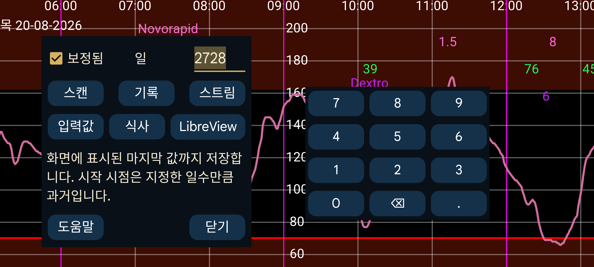

ar be de es hi it ja ko nl pl ru tr uk uz zh en
Juggluco의 데이터를 파일로 내보냅니다.
식사는 HTML로 저장합니다. 그 밖의 모든 데이터는 .tsv(탭으로 구분된 값)로 저장합니다. LibreOffice Calc, Microsoft Excel, Mathematica 또는 R 같은 프로그램에서 불러올 수 있습니다. 항목 구분에 쉼표 대신 탭을 사용하는 .csv와 비슷한 형식입니다. UTF-8 인코딩을 사용합니다.
각 열의 의미는 다음에서 확인할 수 있습니다: https://www.juggluco.nl/Juggluco/webserver.html.
일: Juggluco 7.1.0부터 저장할 일수를 선택할 수 있습니다. 종료 날짜는 화면의 오른쪽 경계입니다. 따라서 Juggluco에서 과거 데이터를 보고 있다면 이전 데이터만 내보냅니다(왼쪽 가운데 메뉴→통계와 동일).
보정됨: 보정된 값을 저장합니다. 이 설정을 사용하면 스캔, 스트림 및 기록 에서 각 항목의 보정 값과 원시 값을 모두 저장합니다. LibreView 형식에서는 보정 값이 있으면 보정 값만 저장하고, 없으면 보정되지 않은 원시 값을 저장합니다.
Juggluco 7.1.0부터는 Juggluco의 웹 서버(왼쪽 메뉴→설정→데이터 교환→웹 서버)를 통해서도 이 데이터를 받을 수 있습니다. 참조: https://www.juggluco.nl/Juggluco/webserver.html
LibreView: 데이터를 LibreView 형식으로 저장합니다. 이렇게 하면 해당 형식을 요구하는 프로그램 및 웹 서비스로 FreeStyle Libre가 아닌 센서의 데이터도 가져올 수 있습니다. Dexcom 센서는 5분 값이 저장되고 Sibionics 센서는 5분마다 스트림 값 하나가 저장됩니다. Libre 0, 2 및 3 센서의 기록 값도 저장됩니다. 인슐린 투여량, 탄수화물 및 메모는 먼저 레이블을 지정한 뒤 왼쪽 메뉴→설정→데이터 교환→LibreView→입력값 보내기에서 이 범주에 연결한 경우에만 저장됩니다.